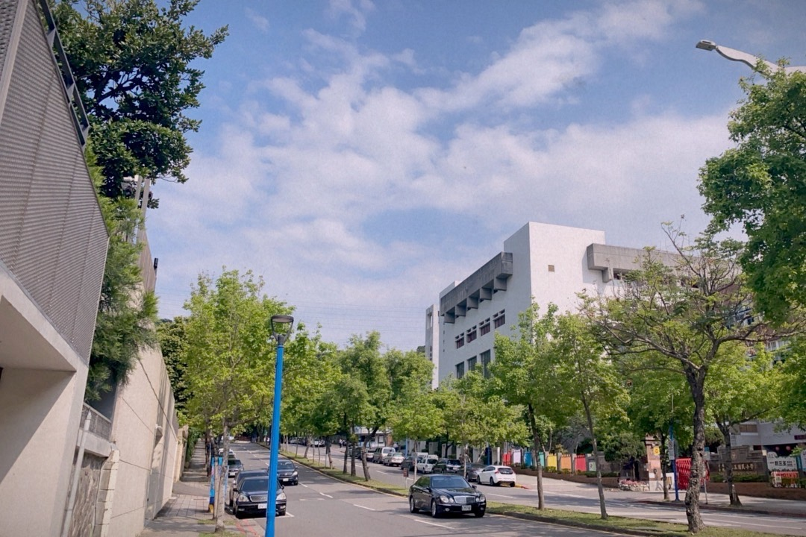

我的名字是周佳霈， 我出生於臺北市，而我從小到大成長的地方，我的家鄉，準確來講，是位於士林區的一個地區-天母。
天母是位於臺灣臺北市士林區境內的一個地區。北、東緊鄰陽明山國家公園，西以磺溪與北投區的石牌為界，南接蘭雅、芝山岩地區以外雙溪與士林福德洋、林子口相隔。
舊稱三角埔，清代、日治時期皆以三角埔為當地名稱，天母原本僅為境內的小地名。 戰後三角埔地區劃為三玉里，現分為8里，合稱天母次分區，但鄰近的蘭雅、芝山岩地區亦常使用天母為地名，一般視為廣義的天母地區。
在我眼裡的天母其實不像大家所說的，到處都是高級住宅，或是住在這邊的居民都一定很富有。
為何我的家鄉給大家滿滿的既定印象呢?
對我來說，天母是富有人情味和活力的地方，此地區坐落了幾間中學、小學與幼兒園，街道上總是少不了成群結伴的學生們，公園裡也總是充斥著孩童們的歡笑聲，這裡的公園也不少，能滿足許多喜愛運動的居民，無論是遛狗還是帶小朋友出來玩都十分合適。
像是天母運動公園，是我成長至今無法缺少的地方之一，在那裏有著許多我兒時的回憶。
國小就讀臺北市士林區三玉國民小學，國中就讀臺北市立天母國民中學，兩所相鄰的學校，都離我的住家很近，走路十分鐘就能抵達，因此我的童年生活幾乎沒有踏離天母這個地區過。
雖然這裡捷運無法直接抵達，交通的方便性略顯不足，但依舊無法減去我對它的喜愛。